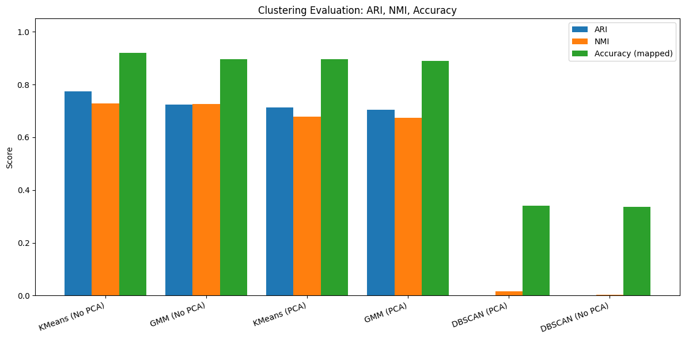

Overview
This project uses the UCI Seeds dataset: 210 wheat kernels from three varieties, each described by seven measurements of its shape (area, perimeter, compactness, length, width, asymmetry and groove length). The project had two parts. First, I clustered a version of the data with the variety labels removed to see whether the groups could be found without them. Then I used the original labeled data to check how well each clustering method recovered the true varieties, and compared them with a supervised classifier.
Exploration & Preprocessing
- The data had no missing values or duplicate rows. Most features were roughly normally distributed, but
asymmetrywas skewed and had the widest spread. - A correlation heatmap showed that the size features (
area,perimeter,length,width) are strongly correlated, which motivated trying each method with and without PCA. - Removed 6 outliers with the IQR rule (210 to 204 rows) for K-means and GMM, which are sensitive to extreme points. DBSCAN used all 210 rows, since it labels outliers as noise by itself.
- Standardized every feature with
StandardScaler, because all three clustering methods are based on distances. - Built PCA versions that keep 95% of the variance (for K-means and GMM) and 2 components (for DBSCAN and for plotting).
Clustering Without Labels
- K-means: compared k = 2 to 9 using the elbow method and silhouette scores, with and without PCA.
- Gaussian Mixture Models: searched 1–10 components across four covariance types and picked the model with the lowest BIC. Without PCA, BIC chose 4 components (silhouette 0.29). With PCA, it chose 3 components, matching the true number of varieties (silhouette 0.41).
- DBSCAN: set
epsfrom a k-distance plot. With and without PCA it found only one cluster, labeling 2–4% of the seeds as noise.
Results Against the True Labels
The original UCI file includes the variety of each seed (70 per variety), so I refit each clustering method with 3 clusters and scored it against the true labels. I also trained a multinomial logistic regression and scored it with 5-fold cross-validated predictions over all 210 seeds. For clustering, accuracy is measured by assigning each cluster to the variety that most of its seeds belong to.
| Model | ARI | NMI | Accuracy |
|---|---|---|---|
| Logistic regression (supervised) | 0.824 | 0.775 | 93.8% |
| K-means | 0.773 | 0.728 | 91.9% |
| GMM | 0.723 | 0.725 | 89.5% |
| K-means + PCA | 0.714 | 0.678 | 89.5% |
| GMM + PCA | 0.704 | 0.674 | 89.0% |
| DBSCAN + PCA | 0.000 | 0.017 | 34.1% |
| DBSCAN | 0.000 | 0.004 | 33.7% |

Classification
The logistic regression ran in a pipeline with feature scaling. I tuned the regularization strength C with a grid search and stratified 5-fold cross-validation, optimizing macro-F1 (best C = 5, cross-validated macro-F1 0.950). On a held-out test set of 53 seeds it reached 94.3% accuracy and a macro-F1 of 0.943. Variety 2 was classified perfectly. The only mistakes were 3 seeds of variety 1 predicted as variety 3.
Key Findings
- The three varieties are well separated by kernel shape alone. Plain K-means put almost 92% of seeds with the right variety without ever seeing the labels.
- PCA gave the GMM a better silhouette score and the right number of clusters, but it slightly lowered agreement with the true labels for both K-means and GMM.
- DBSCAN is a poor fit here: the varieties sit close together without low-density gaps between them, so it merged everything into one cluster.
- Variety 1 is the hardest to separate. Most errors, for both clustering and classification, involve variety 1 being confused with variety 2 or 3.
Limitations
The dataset is small (210 seeds, and a 53-seed test set), so a single misclassified seed moves accuracy by about 2 points. Accuracy for the clustering models uses the true labels to name each cluster, so it is an optimistic upper bound. DBSCAN was tested with a single heuristic for eps, so other settings might do better.